KrigingAlgorithm¶
(Source code, png, hires.png, pdf)
{kind=link}
{kind=link}
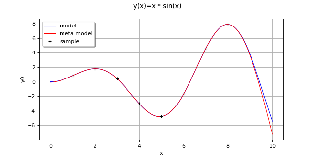
-
class
KrigingAlgorithm(*args)¶ Kriging algorithm.
Refer to Kriging.
- Available constructors:
KrigingAlgorithm(inputSample, outputSample, covarianceModel, basis, normalize=True)
KrigingAlgorithm(inputSample, outputSample, covarianceModel, basisCollection, normalize=True)
- Parameters
- inputSample, outputSample2-d sequence of float
The samples
 and
and  upon which the meta-model is built.
upon which the meta-model is built.- covarianceModel
CovarianceModel Covariance model used for the underlying Gaussian process assumption.
- basis
Basis Functional basis to estimate the trend (universal kriging):
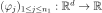
.If
 , the same basis is used for each marginal output.
, the same basis is used for each marginal output.- basisCollectionsequence of
Basis Collection of
 functional basis: one basis for each marginal output:
functional basis: one basis for each marginal output: 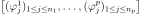
. If the sequence is empty, no trend coefficient is estimated (simple kriging).- normalizebool, optional
Indicates whether the input sample has to be normalized.
Default value is True. It implies working on centered & reduced input sample.
Notes
We suppose we have a sample
 where
where  for all k, with
for all k, with 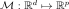
the model.The meta model Kriging is based on the same principles as those of the general linear model: it assumes that the sample
 is considered as the trace of a Gaussian process
is considered as the trace of a Gaussian process  on
on  . The Gaussian process is defined by:
. The Gaussian process is defined by:(1)¶
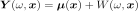
where:
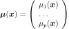
with
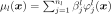
and the trend functions.
the trend functions.
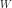
is a Gaussian process of dimension p with zero mean and covariance function (see
(see CovarianceModelfor the notations).The estimation of the all parameters (the trend coefficients
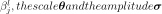
) are made by theGeneralLinearModelAlgorithmclass.The Kriging algorithm makes the general linear model interpolary on the input samples. The Kriging meta model
 is defined by:
is defined by:
where
 is the condition
is the condition  for each
for each ![k \in [1, N]](../../../_images/math/72ce95142c180a796835ba1c2e0a8a6cdf3ecbfd.svg) .
.(1) writes:

where
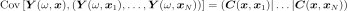
is a matrix in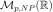
and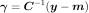
.A known centered gaussian observation noise
 can be taken into account
with
can be taken into account
with setNoise():
Examples
Create the model
 and the samples:
and the samples:>>> import openturns as ot >>> f = ot.SymbolicFunction(['x'], ['x * sin(x)']) >>> sampleX = [[1.0], [2.0], [3.0], [4.0], [5.0], [6.0], [7.0], [8.0]] >>> sampleY = f(sampleX)
Create the algorithm:
>>> basis = ot.Basis([ot.SymbolicFunction(['x'], ['x']), ot.SymbolicFunction(['x'], ['x^2'])]) >>> covarianceModel = ot.SquaredExponential([1.0]) >>> covarianceModel.setActiveParameter([]) >>> algo = ot.KrigingAlgorithm(sampleX, sampleY, covarianceModel, basis) >>> algo.run()
Get the resulting meta model:
>>> result = algo.getResult() >>> metamodel = result.getMetaModel()
Methods
getClassName(self)Accessor to the object’s name.
getDistribution(self)Accessor to the joint probability density function of the physical input vector.
getId(self)Accessor to the object’s id.
getInputSample(self)Accessor to the input sample.
getName(self)Accessor to the object’s name.
getNoise(self)Observation noise variance accessor.
getOptimizationAlgorithm(self)Accessor to solver used to optimize the covariance model parameters.
getOptimizationBounds(self)Accessor to the optimization bounds.
getOptimizeParameters(self)Accessor to the covariance model parameters optimization flag.
getOutputSample(self)Accessor to the output sample.
Accessor to the reduced log-likelihood function that writes as argument of the covariance’s model parameters.
getResult(self)Get the results of the metamodel computation.
getShadowedId(self)Accessor to the object’s shadowed id.
getVisibility(self)Accessor to the object’s visibility state.
hasName(self)Test if the object is named.
hasVisibleName(self)Test if the object has a distinguishable name.
run(self)Compute the response surface.
setDistribution(self, distribution)Accessor to the joint probability density function of the physical input vector.
setName(self, name)Accessor to the object’s name.
setNoise(self, noise)Observation noise variance accessor.
setOptimizationAlgorithm(self, solver)Accessor to the solver used to optimize the covariance model parameters.
setOptimizationBounds(self, optimizationBounds)Accessor to the optimization bounds.
setOptimizeParameters(self, optimizeParameters)Accessor to the covariance model parameters optimization flag.
setShadowedId(self, id)Accessor to the object’s shadowed id.
setVisibility(self, visible)Accessor to the object’s visibility state.
-
__init__(self, *args)¶ Initialize self. See help(type(self)) for accurate signature.
-
getClassName(self)¶ Accessor to the object’s name.
- Returns
- class_namestr
The object class name (object.__class__.__name__).
-
getDistribution(self)¶ Accessor to the joint probability density function of the physical input vector.
- Returns
- distribution
Distribution Joint probability density function of the physical input vector.
- distribution
-
getId(self)¶ Accessor to the object’s id.
- Returns
- idint
Internal unique identifier.
-
getName(self)¶ Accessor to the object’s name.
- Returns
- namestr
The name of the object.
-
getNoise(self)¶ Observation noise variance accessor.
- Returns
- noisesequence of positive float
The noise variance
 of each output value.
of each output value.
-
getOptimizationAlgorithm(self)¶ Accessor to solver used to optimize the covariance model parameters.
- Returns
- algorithm
OptimizationAlgorithm Solver used to optimize the covariance model parameters.
- algorithm
-
getOptimizationBounds(self)¶ Accessor to the optimization bounds.
- Returns
- problem
Interval The bounds used for numerical optimization of the likelihood.
- problem
-
getOptimizeParameters(self)¶ Accessor to the covariance model parameters optimization flag.
- Returns
- optimizeParametersbool
Whether to optimize the covariance model parameters.
-
getReducedLogLikelihoodFunction(self)¶ Accessor to the reduced log-likelihood function that writes as argument of the covariance’s model parameters.
- Returns
- reducedLogLikelihood
Function The potentially reduced log-likelihood function.
- reducedLogLikelihood
Notes
We use the same notations as in
CovarianceModelandGeneralLinearModelAlgorithm: refers to the scale parameters and
refers to the scale parameters and
 the amplitude. We can consider three situtations here:
the amplitude. We can consider three situtations here:Output dimension is
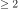
. In that case, we get the full log-likelihood function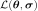
.Output dimension is 1 and the GeneralLinearModelAlgorithm-UseAnalyticalAmplitudeEstimate key of
ResourceMapis set to True. The amplitude parameter of the covariance model is in the active set of parameters and thus we get the reduced
log-likelihood function 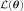
.Output dimension is 1 and the GeneralLinearModelAlgorithm-UseAnalyticalAmplitudeEstimate key of
ResourceMapis set to False. In that case, we get the full log-likelihood .
The reduced log-likelihood function may be useful for some pre/postprocessing: vizualisation of the maximizer, use of an external optimizers to maximize the reduced log-likelihood etc.
Examples
Create the model
and the samples:>>> import openturns as ot >>> f = ot.SymbolicFunction(['x0'], ['x0 * sin(x0)']) >>> inputSample = ot.Sample([[1.0], [3.0], [5.0], [6.0], [7.0], [8.0]]) >>> outputSample = f(inputSample)
Create the algorithm:
>>> basis = ot.ConstantBasisFactory().build() >>> covarianceModel = ot.SquaredExponential(1) >>> algo = ot.KrigingAlgorithm(inputSample, outputSample, covarianceModel, basis) >>> algo.run()
Get the reduced log-likelihood function:
>>> reducedLogLikelihoodFunction = algo.getReducedLogLikelihoodFunction()
-
getResult(self)¶ Get the results of the metamodel computation.
- Returns
- result
KrigingResult Structure containing all the results obtained after computation and created by the method
run().
- result
-
getShadowedId(self)¶ Accessor to the object’s shadowed id.
- Returns
- idint
Internal unique identifier.
-
getVisibility(self)¶ Accessor to the object’s visibility state.
- Returns
- visiblebool
Visibility flag.
-
hasName(self)¶ Test if the object is named.
- Returns
- hasNamebool
True if the name is not empty.
-
hasVisibleName(self)¶ Test if the object has a distinguishable name.
- Returns
- hasVisibleNamebool
True if the name is not empty and not the default one.
-
run(self)¶ Compute the response surface.
Notes
It computes the kriging response surface and creates a
KrigingResultstructure containing all the results.
-
setDistribution(self, distribution)¶ Accessor to the joint probability density function of the physical input vector.
- Parameters
- distribution
Distribution Joint probability density function of the physical input vector.
- distribution
-
setName(self, name)¶ Accessor to the object’s name.
- Parameters
- namestr
The name of the object.
-
setNoise(self, noise)¶ Observation noise variance accessor.
- Parameters
- noisesequence of positive float
The noise variance
of each output value.
-
setOptimizationAlgorithm(self, solver)¶ Accessor to the solver used to optimize the covariance model parameters.
- Parameters
- algorithm
OptimizationAlgorithm Solver used to optimize the covariance model parameters.
- algorithm
Examples
Create the model
and the samples:>>> import openturns as ot >>> input_data = ot.Uniform(-1.0, 2.0).getSample(10) >>> model = ot.SymbolicFunction(['x'], ['x-1+sin(pi_*x/(1+0.25*x^2))']) >>> output_data = model(input_data)
Create the Kriging algorithm with the optimizer option:
>>> basis = ot.Basis([ot.SymbolicFunction(['x'], ['0.0'])]) >>> thetaInit = 1.0 >>> covariance = ot.GeneralizedExponential([thetaInit], 2.0) >>> bounds = ot.Interval(1e-2,1e2) >>> algo = ot.KrigingAlgorithm(input_data, output_data, covariance, basis) >>> algo.setOptimizationBounds(bounds)
-
setOptimizationBounds(self, optimizationBounds)¶ Accessor to the optimization bounds.
- Parameters
- bounds
Interval The bounds used for numerical optimization of the likelihood.
- bounds
Notes
See
GeneralLinearModelAlgorithmclass for more details, particularlysetOptimizationBounds().
-
setOptimizeParameters(self, optimizeParameters)¶ Accessor to the covariance model parameters optimization flag.
- Parameters
- optimizeParametersbool
Whether to optimize the covariance model parameters.
-
setShadowedId(self, id)¶ Accessor to the object’s shadowed id.
- Parameters
- idint
Internal unique identifier.
-
setVisibility(self, visible)¶ Accessor to the object’s visibility state.
- Parameters
- visiblebool
Visibility flag.